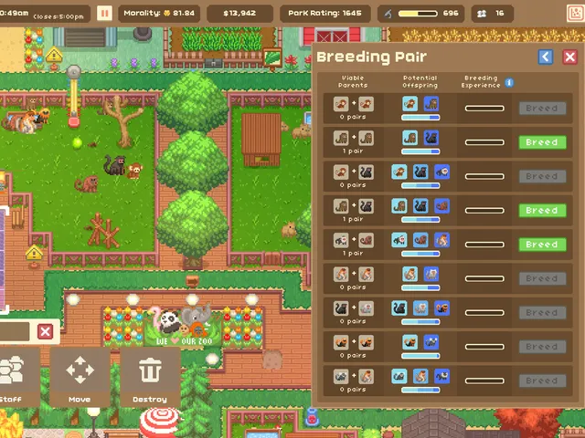
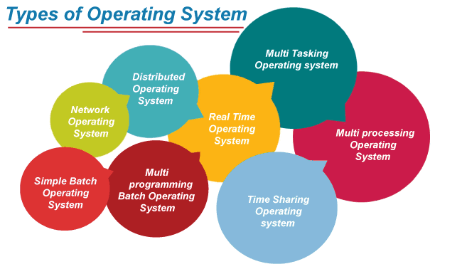

2025-11-06: Operating System
General Information
CMOS stores the configurations and instructions for the BIOS/UEF
Ther setup program: Is where you can change the configurations of the framework of the PC
BIOS/UEFI is the frameware of the PC
Boot process to the OS
- CPU reads from ROM
- BIOS/UEFI runs the test to check hardware (POST)
- BIOS/UEFI follows the boot device order to load the bootloader into memory
- Bootloader finds the OS kernel on the disk
- Load it into RAM
- OS kernel take control
Why Do we need an OS?
- To Coordinate resources
- To manage inputs and outputs
- To dedicate tasks
It is similar to how you run a grand strategy game, you need someone (The player) to manage everything
Responsabilities of the OS
- Resource Management (CPU, memory, storage, input and output of devices)
- Process management (Start, stop, schedule programs)
- File system management (Store, retrieve and secure data
- User interface (CLI, GUI)
The Operating System
Resource Management
- OS allocates RAM to each program
- Prevents programs from overewriting each othe
- Let the computer act like it has more memory is the OS or SSD
- OS communicates with input/output & Hardware interface through APIs
Similar in how the player needs to optimize their resources in an RTS game to win

Process Management
- OS manages processes (Programs in execution)
- OS batches processes: starts, pauses, resumes and stops programs
- OS schedules CPU time among multiple processes
Like managing training of troops or gatherers, you need to micromanage everything
File System
- OS handles multi user accounts. Access rights
- Prevents users and programs from interfering with ewach othe
- OS manages files folders and permissions
- Examples: NTFS (Windows), ext4 (Linux), APFS (macOS
- OS handles read/write requests
In strategy games, you need to manage the flow of production and buildings in the game
User interface
The user interface is the interface where the data is interacted by the user
Different OS
- Batch Operating System
- Multi-Programming Operating System
- Multi-Tasking/Time-sharing Operating Systems
- Multi-Processing Operating System
- Distributed Operating System
- Network Operating System
- Network Operating System
- Mobile Operating System

Differences between them
- GUI/CLI support
- File system types
- File system types
- File system types
Types of OS
- Windows
- MacOS
- ChromeOS
- Linux Distros
- Arch
- Lubuntu
- Xubuntu
- Mint
Like different strategies in a RTS game

The kernal
The kernal is the part of the operating system which manages process management and other operations done by the OS
Basically the controller of the OS, or the player